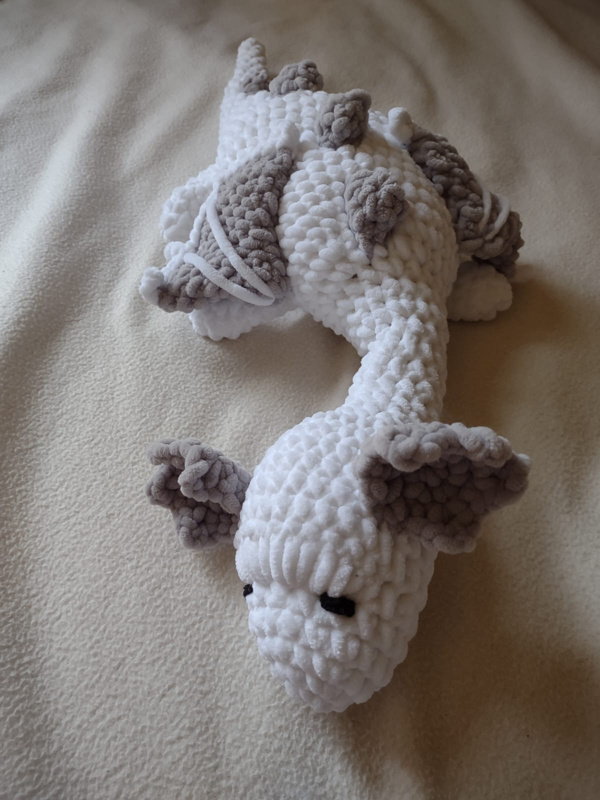
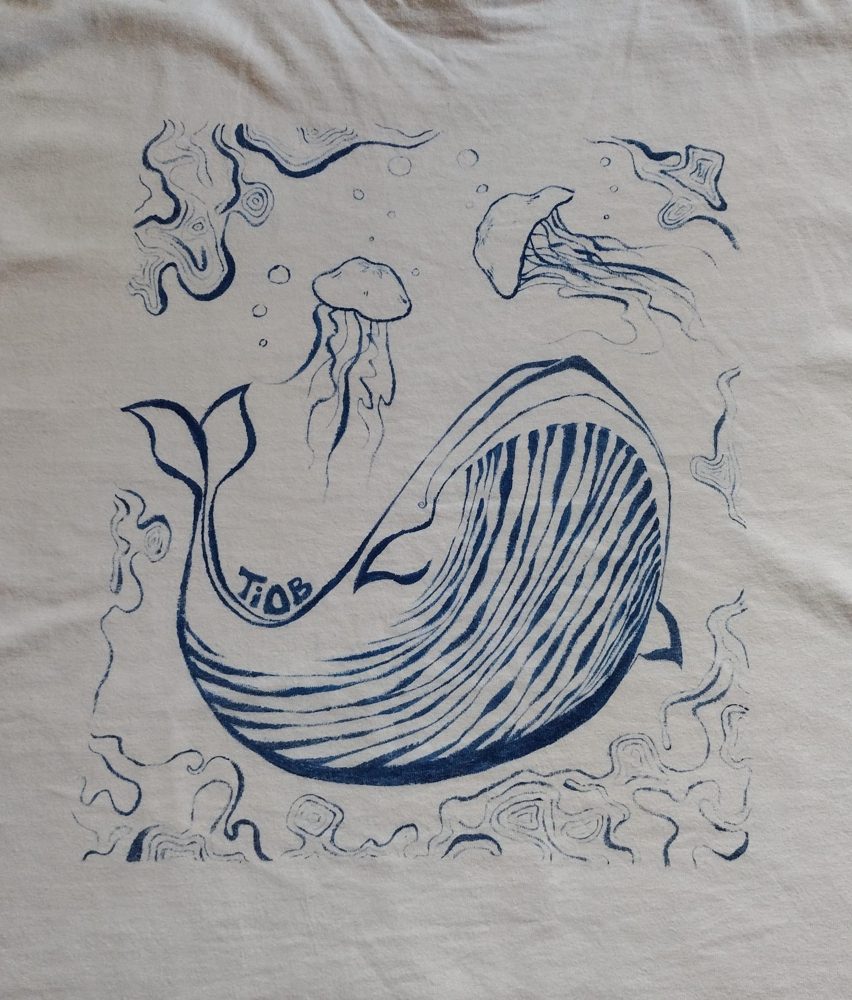
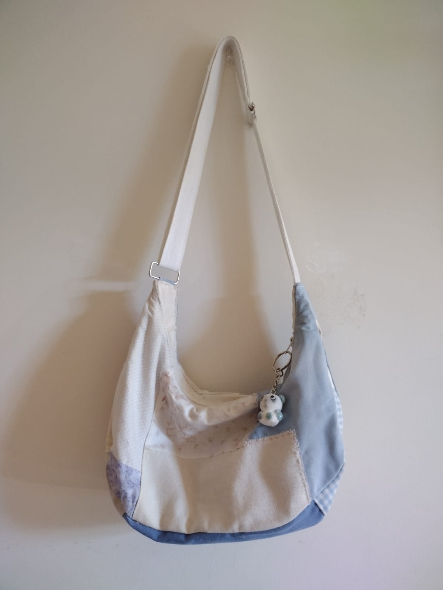

fiber arts
Cardigan
Summer-Fall 2024 | now... technically this took a year because i wanted to make it look perfect. so if you counted all 3 attempts, i probably would've spent about 50 hours on it or so
 pattern/tutorial (Youtube)
pattern/tutorial (Youtube)
Pillowcase
Spring-Summer 2024 | on and off project, ~2 months
 alpha pattern (Pinterest)
alpha pattern (Pinterest)
Keroppi Tapestry
March 2024 | 7 hours (i distinctly remembering doing this all in one day...)

another note: i don't often create formal fiber arts projects, just because a majority of them are just me altering things or little gifts for friends. here's some of my work from that!:

amigurumi dragon that i love dearly... (named Blobert)

the back of a T-shirt that I painted

patchwork crossbody/mini bag made entirely of fabric scraps (excluding notions)